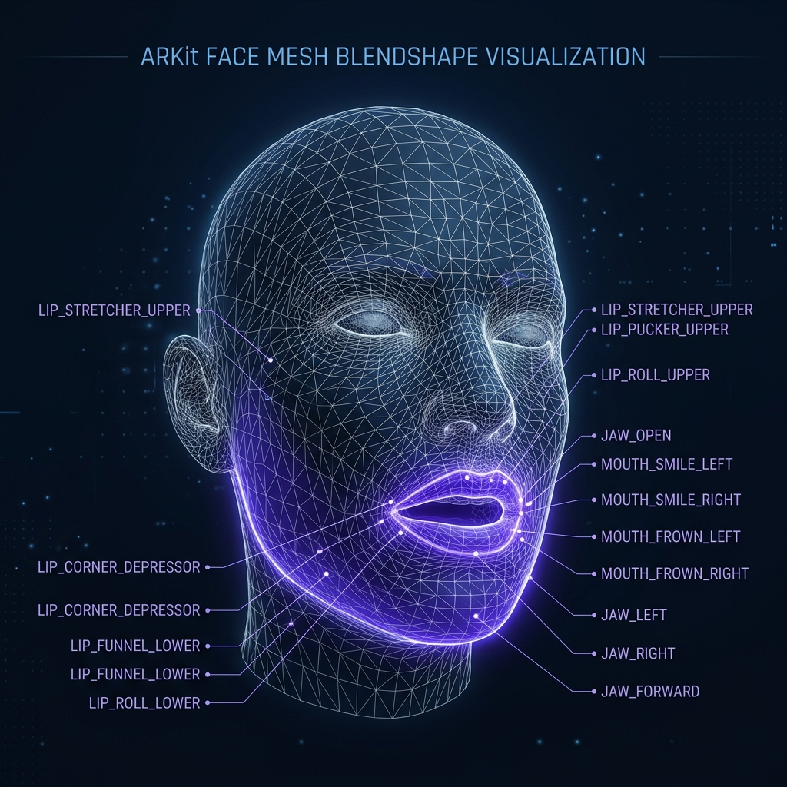
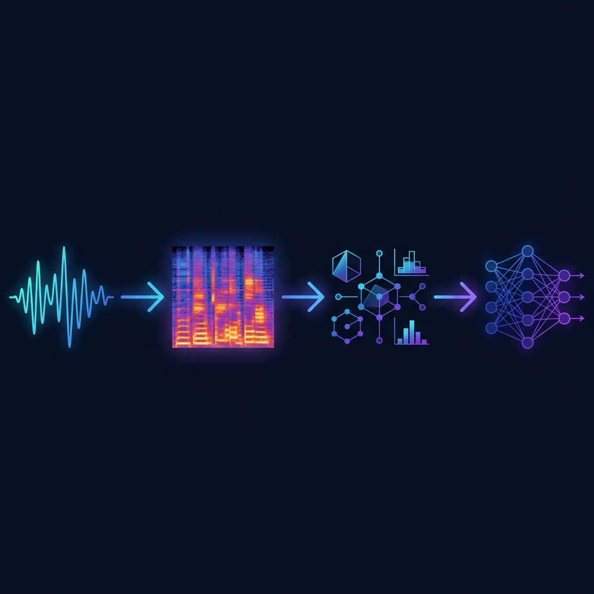
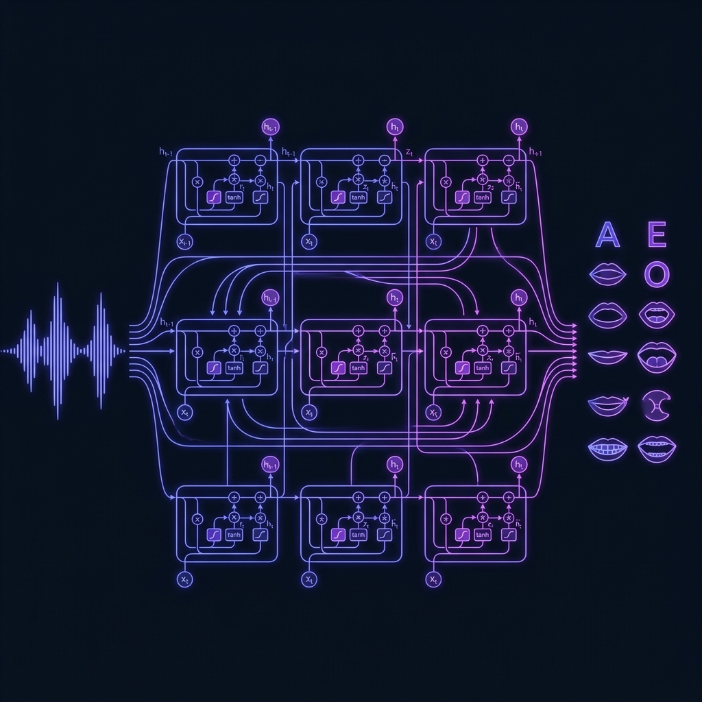
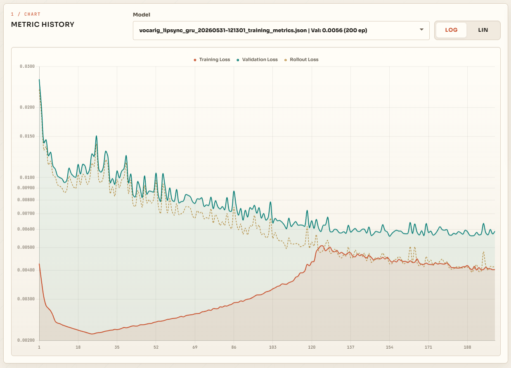
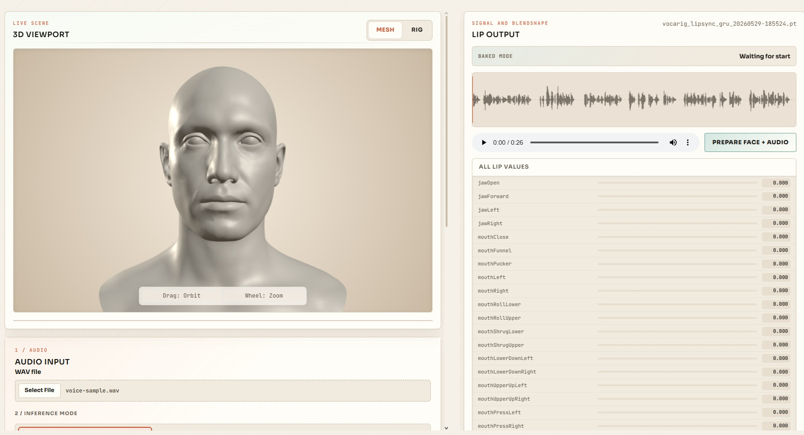
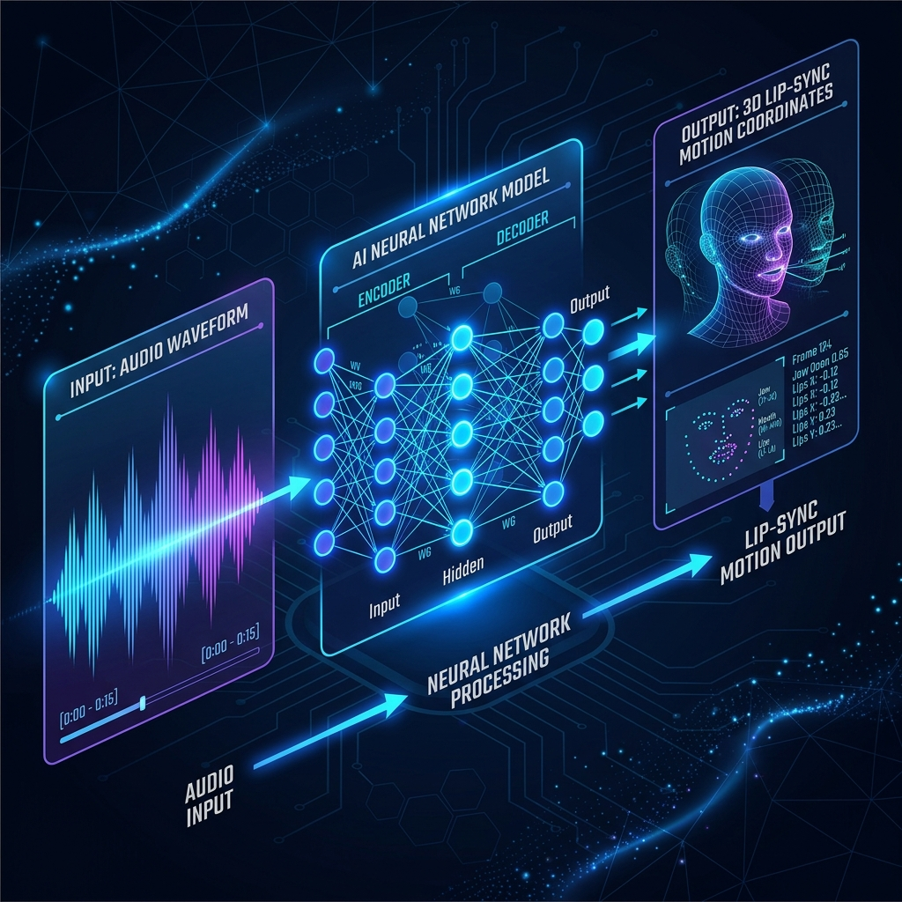
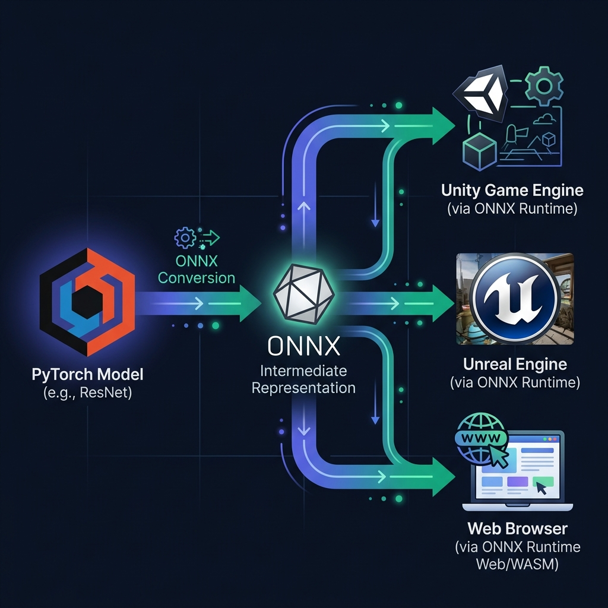

Ses Tabanlı
Dudak
Senkronizasyonu
VocaRig
Ses girdisini ARKit uyumlu dudak ve çene hareketlerine çeviren uçtan uca yapay sinir ağı sistemi.
Problem Tanımı
Dijital karakter konuşurken inandırıcılık, ses ile dudak hareketinin aynı anda ve doğal akmasına bağlıdır.
-
✕Manuel Senkronizasyon Kare kare düzenleme — zaman alıcı ve pahalı.
-
✕Donanım Tabanlı Yakalama Özel kamera ve sensör — her kullanıcı için erişilebilir değil.
-
✓VocaRig Çözümü Yalnızca ses girdisi ile otomatik dudak animasyonu.

Amaç ve Kapsam
Ses girdisinden 3B karakter için dudak ve çene hareketlerini otomatik üretmek.
-
🎯Dudak Odaklı Üretim Model yalnızca konuşma ile ilişkili 21 dudak ve çene kanalını üretir.
-
🔄Ardışık/Causal Üretim Geçmiş ağız durumunu referans alan, sıçramasız değer üretimi.
-
📦Bütünleşik Altyapı Veri üretimi, eğitim, ONNX dışa aktarım ve Web arayüzü.
Kullanılan Teknolojiler
Eğitim, servis, 3B önizleme ve oyun motoru aktarımı aynı geliştirme hattı (pipeline) üzerinde birleşir.
Model & Eğitim
PyTorch & NumPy ile GRU Eğitimi
Servis Katmanı
FastAPI & WebSocket Canlı Çıkarım
WebGL Viewport
Three.js 3B Karakter Önizleme
Taşınabilirlik
ONNX — Unity / Unreal Entegrasyonu
Ses Özellik Çıkarımı
Ham dalga formu sabit örnekleme, mel bantları ve kısa bağlam penceresi ile sayısallaştırılır.
-
116 kHz Mono Dönüşüm WAV → tek kanal, sabit örnekleme hızı.
-
280 Kanallı Log-Mel 25 ms pencere, 10 ms hop ile spektrogram.
-
311-Frame Context (Bağlam) Her adımda 11×80 ses penceresi modele beslenir.

Veri Tasarımı
NPZ şeması ses bağlamını, önceki ağız durumunu ve hedef lip vektörünü tek örnekte toplar.
-
📊Sentetik Veri Hattı 4000 utterance, TR/EN fonem karışımı, kontrollü sessizlik.
-
📁NPZ Formatı Ses penceresi, önceki lip, zaman/stil ve hedef vektör tek dosyada.
-
🔀Utterance Bazlı Veri Ayrımı Eğitim/doğrulama ayrımı kare (frame) değil, sözce (utterance) düzeyindedir.
| Veri Alanı | Boyut | Görev |
|---|---|---|
audio_windows |
N × 11 × 80 | Ses bağlamı |
previous_lip |
N × 21 | Önceki ağız durumu |
time_values |
N × 3 | Zaman, güncelleme, enerji |
style_values |
N × 2 | Stil & asimetri |
y |
N × 21 | Hedef dudak vektörü |
Model: LipSyncGRU
GRUCell önceki durumu hatırlar; değişim sınırları ağız hareketindeki sıçramayı azaltır.
-
▶Ses Kodlayıcı Log-Mel bağlamı Conv1D ile özetler.
-
⚙GRUCell Zamansal Hafıza Durum aktarımı ile nedensel üretim.
-
🔒Değişim Sınırlama
max_step&warmupile yumuşak geçiş.

Model Akış Şeması
Ses, önceki dudak pozu ve zaman/stil sinyali tek bir projeksiyon katmanında (linear projection) birleştirilerek GRU hücresine aktarılır.
Bileşik Kayıp Fonksiyonu (Compound Loss)
Sadece hedefe yaklaşmak yetmez; hız, jerk, sessizlik ve sınır (range) cezaları animasyon kalitesini korur.
Pose Loss
Hedef dudak pozuna yaklaşma
Velocity Loss
Hareket hızı pürüzsüzlüğü
Jerk Loss
Ani ivme değişimlerini cezalandırma
Silence Loss
Sessizlikte ağız kapatma cezası
Eğitim Parametreleri
200 epoch CUDA eğitimi ile elde edilen nihai model konfigürasyonu.
-
📈Teacher Forcing Sönümleme İlk epochlarda hedef kullanılır, sonra model kendi çıktısıyla ilerler.
-
⏱AdamW Optimizer lr: 0.00035, weight decay: 0.0001, fp32 hassasiyet.
| Parametre | Değer |
|---|---|
| Model Tipi | lipsync_gru |
| Audio Context | 11 kare |
| Mel Bandı | 80 |
| Hidden Size | 128 |
| Batch Size | 64 |
| Sequence Window | 96 |
| Validation Split | %10 |
| Device | cuda |
Eğitim Sonuçları
Eğitim kaybı ve doğrulama kaybı yakın kaldı; Rollout (Serbest Akış) kaybı canlı kullanım için izlenen ana sinyal oldu.

Nihai Model Değerlendirmesi
Son model ayrılmış doğrulama verisi, serbest akış kaybı ve sıfır teacher forcing ile kontrol edildi.
Best validation loss bu noktada yakalandı: 0.00559.
Final epochta model kendi önceki çıktılarıyla ilerledi.
Train ve validation konuşmaları çakışmadı.
VocaRig Lab Arayüzü
Ses yükleme, canlı mikrofon, 3B avatar ve dudak kanalı telemetrisi aynı kontrol yüzeyinde toplanır.
-
🎬Üç Çıkarım Modu Baked · No-Baked · Real Test (canlı mikrofon)
-
📊Canlı Telemetri Çıkarım (Inference) süresi ve eğitim metrikleri.
-
🔗Dudak Kanalı Önizleme Üretilen 21 kanal anlık olarak avatar üzerinde izlenir.

ARKit Dudak Kanalları
Model çıktısı, ARKit blendshape setindeki dudak ve çene odaklı kanallara eşlenir.
-
LÇene ve Kapanış jawOpen, mouthClose, mouthPucker, mouthFunnel...
-
SDudak Şekilleri mouthPucker, mouthFunnel, mouthRoll, mouthShrug...
-
FDudak Yönleri mouthLeft, mouthRight, mouthUpperUp, mouthLowerDown...
Test & Doğrulama
ARKit kanal sırası, veri aralığı, eğitim artefaktları ve endpoint çıktıları otomatik kontrol edilir.
Contract Tests
52 ARKit & 21 Lip sözleşmesi
Synthetic Data
Deterministik üretim, değer aralığı
Training Tests
Forward, checkpoint, artefakt doğrulama
UI/API Tests
HTTP endpoint & JSON yapı kontrolü

ONNX & Taşınabilirlik
PyTorch modeli dışa aktarılıp Unity veya Unreal tarafında çalıştırılabilir bir çalışma zamanı (runtime) desteği kazanır.
-
✓ONNX Dışa Aktarım PyTorch checkpoint → ONNX formatı.
-
✓Oyun Motoru Entegrasyonu Unity / Unreal Engine desteği.
-
✓Benchmark API ile çıkarım süresi ölçümü.

Sonuç & Gelecek Çalışmalar
VocaRig; veri, model, servis, arayüz ve motor aktarımını tek çalışan prototipte birleştirdi.
Dudak Odaklı Mimari
Ses girdisinden 21 dudak ve çene kanalı üretimi.
Uçtan Uca Sistem
Veri üretimi, eğitim, çıkarım ve UI tek çatıda.
Gelecek: Duygu Durumu
Ses tonundaki duygu durumuna göre dudak hareketlerinin şekillendirilmesi.
Gelecek: Alternatif Modeller
Transformer veya temporal convolution karşılaştırması.
Dinlediğiniz İçin
Teşekkürler
Sorularınızı bekliyoruz.